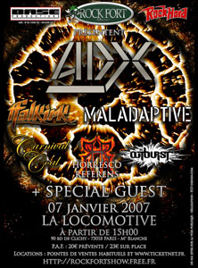
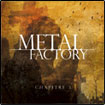
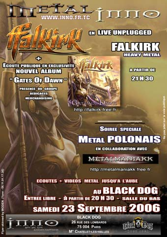
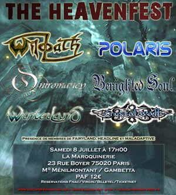

- Prochains concerts -
Samedi 2 décembre à 20h30, salle polyvalente des Essarts-le-Roi (78) |
Samedi 22 décembre au parc de Villeroy, Mennecy (91) |
Dimanche 7 janvier La Locomotive, Paris 18e |
Lâpsit Exillis + guest |
 |
 |

_______________________________________________________________
 |
Falkrik figure sur le 3e volet de la compile metal en ligne "Metal Factory'. Le site propose des compiles avec visuel à imprimer. Tout est gratos, alors soutenez l'initiative : http://metalfactoryrecords.free.fr/ |
_______________________________________________________________
Pour la première fois, Falkirk s'est produit en acoustique. Merci à ceux qui étaient là poura voir partagé ce moment avec nous.
Des photos (et mp3s ??) à venir.

_______________________________________________________________
Merci à tous ceux qui étaient présents à ces deux concerts. On a pu se rencontrer et passer du bon temps ensemble !Dernière minute !
Et retrouvez-nous dès le lendemain pour causer, dédicacer et boire des bières au Heavenfest avec plein de bons groupes ! |
|
 |
_______________________________________________________________
Falkirk était dans l'émission
le jeudi 18 mai en direct à 22h15. en direct 98/98.4 FM captable dans le 74.
Et sur le net : http://www.rockenfolie.com
_______________________________________________________________
L'interview de FALKIRK sur BeaubFm durant l'émission "Les Griffes de la Nuit" sera diffusée le lundi 15 mai. Les auditeurs peuvent écouter la radio sur le 89Mhz (Limoges et la région) et partout ailleurs par internet |
_______________________________________________________________
FALKIRK dans la grosse radio le mardi 2 mai à partir de 20h
_______________________________________________________________
Un site de référencement nouvellement arrivé :

Déjà plus de 500 groupes, des news, et bientôt des extraits audio
_________________________________________________________________
Trois mobilisations qui doivent rester importantes :
ALIGRE FM VA MAL !
Pour savoir comment aider cette radio associative qui ne vit que sur des subventions qu'on veut leur supprimer, rendez-vous sur le site de l'émission connue de tous les metaleux franciliens :

http://rockfortshow.free.fr
Les webzines métal http://angelsymphony.free.fr et http://www.heavylaw.com ont mis en ligne une pétition afin de médiatiser le métal, disponible à l'addresse http://www.heavylaw.com/modules/petition.php
Pétition demandant le retrait de l'ordre du jour parlementaire du projet de loi DADVSI
Non au projet de loi DADVSI !
plus de 160000 signataires depuis le 2 décembre 2005.
|
Les webzines métal http://angelsymphony.free.fr et http://www.heavylaw.com ont mis en ligne une pétition afin de médiatiser le métal, disponible à l'addresse http://www.heavylaw.com/modules/petition.php |
Pétition demandant le retrait de l'ordre du jour parlementaire du projet de loi DADVSI
|
Pour ceux qui ont raté l'émission : elle est en ligne à cette adresse
Retrouvez le groupe dans le |
 |
sur Aligre FM, 93.1 Mhz le jeudi 2 mars. |
 |
Gates of Dawn, le 3e album est sorti le 28 février chez Underclass ! Champagne ! des extraits ici :-) Gates of Dawn, our 3rd album is released and distributed by Underclass ! Sound samples here :-)
Des cadeaux à gagner pour les premiers acheteurs de Gates of Dawn nous envoyant la preuve d'achat de l'album (par courrier ou par mail, scanné) |
____________________________________________________________
 |
Ce sera le 1er concert organisé par l'asso HeavyNation alors venez nombreux ! Les préventes sont à 8 euros, alors n'hésitez pas à contacter l'association ou le groupe pour vous en procurer. http://heavynation.com
|